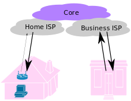

Downloading media files involves the use of linking and framing Internet material, and relates to copyright law. Streaming and downloading can involve making copies of works that infringe on copyrights or other rights, and organizations running such websites may become vicariously liable for copyright infringement by causing others to do so. Open hosting servers allows people to upload files to a central server, which incurs bandwidth and hard disk space costs due to files generates with each download. Anonymous and open hosting servers make it difficult to hold hosts accountable. Taking legal action against the technologies behind unauthorized "file sharing" has proven successful for centralized networks (such as Napster), and untenable for decentralized networks like (Gnutella, BitTorrent). Downloading and streaming relates to the more general usage of the Internet to facilitate copyright infringement also known as "software piracy". As overt static hosting to unauthorized copies of works (i.e. centralized networks) is often quickly and uncontroversially rebuffed, legal issues have in recent years tended to deal with the usage of dynamic web technologies (decentralized networks, trackerless BitTorrents) to circumvent the ability of copyright owners to directly engage particular distributors and consumers.
The World Wide Web has been central to the development of the Information Age and is the primary tool billions of people use to interact on the Internet.[4][5][6] Web pages are primarily text documents formatted and annotated with Hypertext Markup Language (HTML). In addition to formatted text, web pages may contain images, video, audio, and software components that are rendered in the user's web browser as coherent pages of multimedia content.
The Internet has no centralized governance in either technological implementation or policies for access and usage; each constituent network sets its own policies.[3] Only the overreaching definitions of the two principal name spaces in the Internet, the Internet Protocol address (IP address) space and the Domain Name System (DNS), are directed by a maintainer organization, the Internet Corporation for Assigned Names and Numbers (ICANN). The technical underpinning and standardization of the core protocols is an activity of the Internet Engineering Task Force (IETF), a non-profit organization of loosely affiliated international participants that anyone may associate with by contributing technical expertise.[4]
The Internet has no centralized governance in either technological implementation or policies for access and usage; each constituent network sets its own policies.[3] Only the overreaching definitions of the two principal name spaces in the Internet, the Internet Protocol address (IP address) space and the Domain Name System (DNS), are directed by a maintainer organization, the Internet Corporation for Assigned Names and Numbers (ICANN). The technical underpinning and standardization of the core protocols is an activity of the Internet Engineering Task Force (IETF), a non-profit organization of loosely affiliated international participants that anyone may associate with by contributing technical expertise.[4]